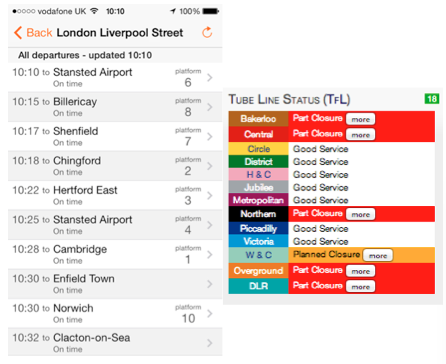
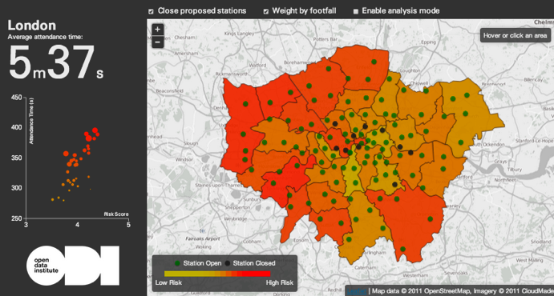
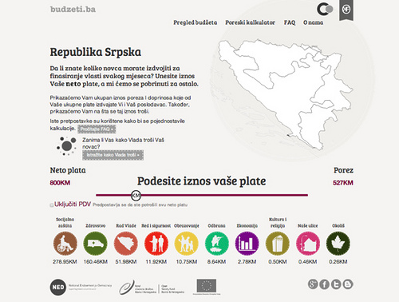
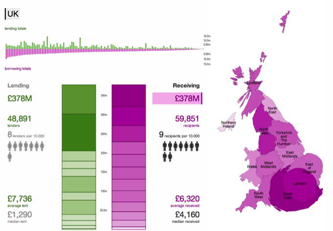
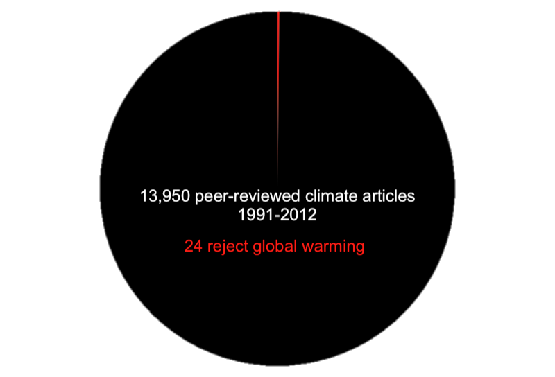
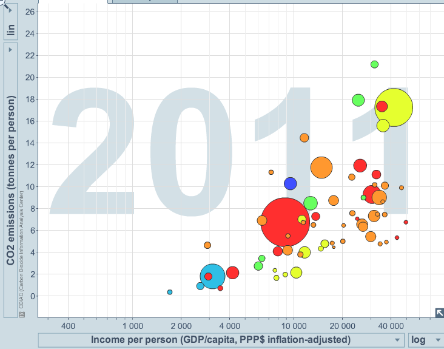

What is Open Data?
A collection of facts, information and statistics that can be analysed to develop new knowledge
A collection of numbers assigned as values to quantitative variables and/or characters assigned as values to qualitative variables
The lowest level of abstraction from which information and then knowledge are derived.
A piece of data or content is open if anyone is free to use, reuse, and redistribute it - subject only, at most, to the requirement to attribute and/or share-alike.
Open data is information that is available for anyone to use, for any purpose, at no cost.
The data must be available as a whole and at no more than a reasonable reproduction cost, preferably by downloading over the internet. The data must also be available in a convenient and modifiable form.
The data must be provided under terms that permit reuse and redistribution including the intermixing with other datasets.
Everyone must be able to use, reuse and redistribute – there should be no discrimination against fields of endeavour or against persons or groups. For example, ‘non-commercial’ restrictions that would prevent ‘commercial’ use, or restrictions of use for certain purposes (e.g. only in education), are not allowed.
 Helps us get from A to B quicker
Open data can help make decision that affect our safety 
 Open data reveals how countries spend (or underspend) their budgets.
Open data identified a £1bn industry - and changed how it was regulated. 
Open data brings the evidence of climate change 
 Open data makes us aware of the impact we have on our planet
Enables benefits across the economy
Image Credit: Ulrich Atz
|
Open personal data
Data about people, not a person. Available to anyone Has been anonymised e.g. number of people attending an event, gender split, age ranges. Bigger numbers are better. |
Available personal data
Data about a person Available to the person only! Often known as MiData e.g. credit scores, energy consumption and spending. |
Closed personal data
Data about a person which is neither open or available Might belong to you or be collected by a company |